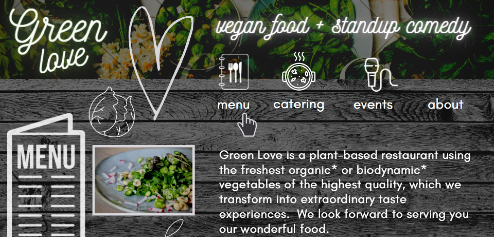

IDENTIFY and FIX (whenever FEASIBLE) the most important PAIN POINTS
by EMPATHIZING with the USER's NEEDS to improve the overall experience
and by making sure the website achieves its BUSINESS GOALS
METHODOLOGY
the DOUBLE DIAMOND 💎💎 with constant ITERATION and
TESTING
USER CENTERED DESIGN with endless empathy :)
DESIGN PROCESS HIGHLIGHTS
DOUBLE DIAMOND: DISCOVERY and DEFINITION of issues
HEURISTIC EVALUATION
using Jacob Nielsen's
10 general principles for interaction design
10 HEURISTICS ANALYSIS resulted in a long list of major and minor issues of various priorities.
EXAMPLES:
only partial and non-clickable breadcrumbs ||
confusing 'menu' link: unclear which one is on-site /catering /take-away ||
some images (hoverable and clickable) open the same the page in a new tab: counterintuitive ||
a mix of Danish and English phrases ||
maker-centric language (eg. biodynamic raw materials) ||
too much cognitive and memory load (lengthy articles) ||
content hierarchy on the landing page is unclear ||
home page: 3 chaotic animations line by line equals lost focus ||
typography and colour inconsistencies break internal standards ||
low quality pictures, uneven sizes ||
overanimated navigation blurs the overall message ||
distracting, competive slogans without a particular order ||
weak mistake prevention: light grey submit button that looks 'inactive' but works ||
1:1 SESSIONS provided evidence, eg. noone understood the word 'biodynamic' and all testees were confused by
the
clickable pictures that weren't links to gallery but opened the landing page in new tab.
STAKEHOLDER'S INTERVIEW: The owner turned to be a friendly person with true passion for vegan food and
abundance
of positive energy. There was a survey, the meeting took an hour. The questions and tasks focused on 4
issues:
1) What is the place all about? 2) Who are the guests? 3) Business goals for the nearest future 4) What is
the purpose of the website in the context of the business goals?
CARD SORTING was helpful in detecting how to organize the navigation to make all desired content easily
discoverable and accessible.
The cards with pages' titles (initial sitemap, but 'sliced') were given to each testee separately and then
they
decided together which of the 3 sets should be the final hierarchy.
DOUBLE DIAMOND: in between
informed re/DEFINITION of the PAIN POINTS and PRIORITY GOALS
There was a number of issues to be solved on every level but
due to the limited feasibility at that time
I have chosen to focus on the landing page and the
menu page as crucial to achieve PRIORITY GOALS :
💡attract new audience and promote a certain lifestyle
💡improve usability and accessibility for wide audience (incl.
non-tech savvy)
💡improve content writing
convey clearly the core values mentioned during the stakeholder's interview
reduce jargon and shorten lengthy articles
💡improve aesthetics (colours, contrasts, conventions, visual
hierarchy and typography)
DOUBLE DIAMOND: DEVELOPMENT AND DELIVERY
1. INFORMATION ARCHITECTURE DESIGN:
1.1 SITEMAP
was created anew after card sorting and after multiple 1:1 sessions on wireframes
Fig.2 The sitemap redesigned.
1.2 WIREFRAMES
(from rough sketches to full new structure)
were created after card sorting and 1:1 sessions and
there were multiple iterations and testing all over again
Fig.3 The wireframes in rough sketch. Quack.
Fig.4 The more decent looking wireframes to be tested. No quack.
2. CONTENT WRITING:
done anew to simplify the language and shorten the articles
3. AESTHETICS:
Visual design done anew followed by further 1:1 sessions to test it so that the final result is very
different from the initial moodboard shwn below.
3.1 MOODBOARD

Fig.4 The moodboard.
3.2 HIGH RESOLUTION INTERACTIVE PROTOTYPE see Fig. 1 to have an idea of the final aesthetic choice and drop me a message if you're interested in
viewing the link showing the whole design process in detail.
magdalena.s.wojtakowska@gmail.com
FULL SCOPE SUMMARIZED
a (very few) EXAMPLES OF CHANGES
PRIORITY GOALS COVERAGE:
✔attract new audience and promote a certain lifestyle
The last tests of the ready interactive prototype showed positive results in comparison to the initial tests
on the website before redesign. The message about the purpose of the place was clear, the main slogan (vegan
restaurant and beyond) proved to increase curiosity and led to further exploration of the site.
Other reasons why the page has improved in the eyes of the testees are mentioned below and my super long and
detailed description of the whole process and results that can be accessed via link. Just drop me a message
:)
magdalena.s.wojtakowska@gmail.com
✔ improve usability and accessibility for wide audience (incl. non-tech savvy)
The tests proved that it was easier for the users to navigate the page and access information due to
structural changes and user-centric language.
✔ improve content writing
The testees understood the core values of the place and were not tired by excessive memory load.
They did not need to know words like "biodynamic farming" as technical vocabulary was "translated" into
Everyman's language.
✔ improve aesthetics (colours, contrasts, conventions, visual hierarchy typography)
That aspect is both technical and subjective. However, the testees chose the final design as 'nicer' and more
'eye-pleasing' over the page as they saw it before redesign.
What I've learned:
The scope of the project was so wide that I'm forced to skip the details,
but such situations are a good reminder of how important it is to prioritize in order of urgency.
The factors here are users' needs, stakeholders' dreams, technical feasibility within a time frame and ...
... and there's the overworked UXer who is in the middle of it all and has to make decisions.
Honestly this project was quite hectic because of the time pressure but being able to achieve feasible
goals and meeting the deadline despite the stress is great boost of self esteem and validation of jumping into
next UX adventures. Yup. I guess I have learned to trust myself more and exercised persuasion skills.